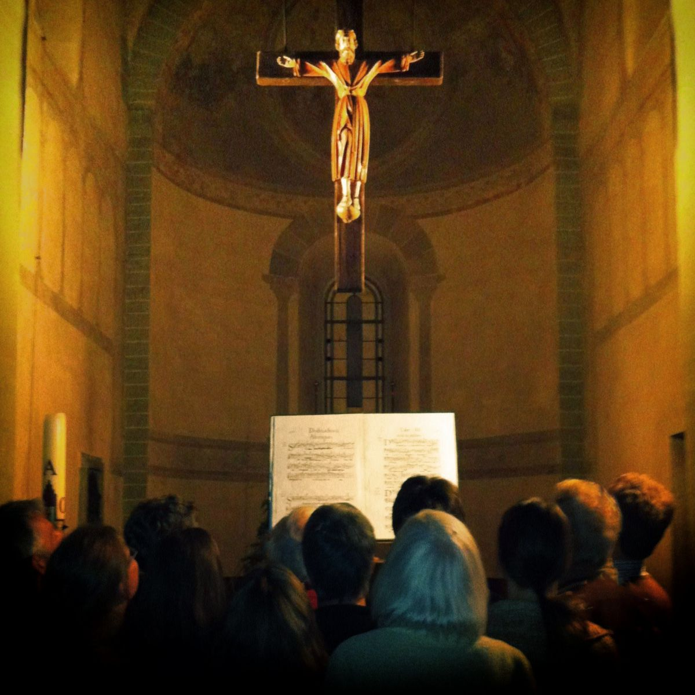
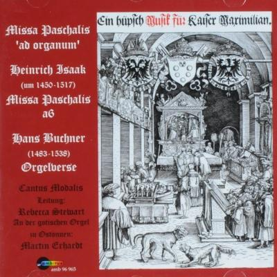

Cantus Modalis wordt gevormd door zangers die zijn opgeleid aan het Fontys Conservatorium, in de toenmalige Schola Cantorum Brabantiae, en / of in het Centrum Cantus Modalis, waar zij zich op masterniveau specialiseerden in uitvoering en interpretatie van middeleeuwse en renaissance muziek. Het ensemble onderscheidt zich doordat er altijd wordt gezongen uit facsimile van de originele manuscripten, of reconstructies daarvan. De gebruikte boeken hebben dus losstaande partijen voor iedere stem, zoals in de periode waarin de muziek gecomponeerd werd gebruikelijk was, en niet de hedendaagse partituur layout. Dit beïnvloedt de manier van zingen positief, weet Dr. Rebecca Stewart, artistiek leider. Het ensemble geeft vaak concerten met adembenemend mooie programma’s in Nederland, Duitsland en in andere landen (o.a. Zuid-Korea, Tsjechië, Italië).
Missie
Ensemble Cantus Modalis onderzoekt de veelal mondeling overgeleverde modale (dwz pre-tonale) principen en esthetiek van componisten uit de late Middeleeuwen en vroege Renaissance. Geheimen die appelleren aan een spiegeling van de muzikale esthaetica uit deze perioden (tot in de 15e eeuw) aan de kosmische gelaagdheid van het Goddelijke. Cantus Modalis is ervan overtuigd dat de boodschap van deze zeer sterke maar zeer onbegrepen muziek vandaag de dag nog even relevant is als 500 jaar geleden.
Klank van het Ensemble
De klinkende resultaten hiervan zijn duidelijk hoorbaar en worden omschreven als ‘uitstekende intonatie’ (Barbara Haggh), ’levendig, doorzichtig en elastisch’ (…), ‘direct tot het hart gaand’ (…) en ‘sonoor en helder’ (Anthony Fiumara). Het is de hoop van Cantus Modalis dat hedendaagse luisteraars, net zoals hun middeleeuwse voorgangers, niet alleen in de ban van deze magische muziek mogen komen, maar dat ze ook de onderliggende waarden ervan mogen voelen.
Artistiek leider Dr. Rebecca Stewart
Cantus Modalis wordt geleid door Dr. Rebecca Stewart. Zij studeerde musicologie, etnomusicologie en zang aan diverse universiteiten in diverse landen. Zij verkreeg haar doctoraat in Ethnomusicology aan de universiteit van Californië en werkte jarenlang aan Hindustaanse klassieke muziek. Dit bracht haar een diep begrip van de modale muziek en vormde de wortel voor haar benadering van de eerste West-Europese muzikale, vocale tradities. Vanaf 1974 concentreerde zij zich op vroege Europese vocale tradities. Van 1987 tot 2002 was zij artistiek leidster van het vocaal ensemble Cappella Pratensis. Zij was oprichtster en leidster van de barokzang afdeling van het Koninklijk Conservatorium in Den Haag en van de afdeling oude ensemblezang van het Brabants Conservatorium in Tilburg. Zij schreef artikelen over vroege modale muziek en zangtechnieken.
Centrum Cantus Modalis
Na haar pensioen richtte zij een centrum voor modale muziek op, Centrum Cantus Modalis, bestaande uit een educatieve tak en een uitvoerende tak: Ensemble Cantus Modalis. Doel van het Centrum is om de onderliggende pricipes van de levende modale tradities van de niet-westerse wereld in samenhang met de ‘uitgestorven’ modale tradities van de westerse wereld te bestuderen. Dit met de intentie om het westerse gevoel van identificatie met haar modale wortels nieuw leven in te blazen.